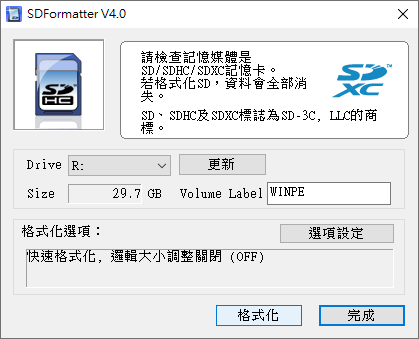
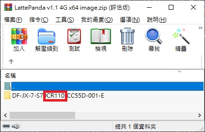
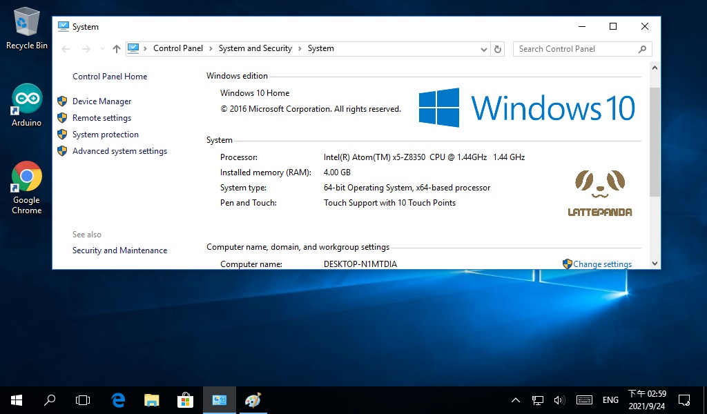
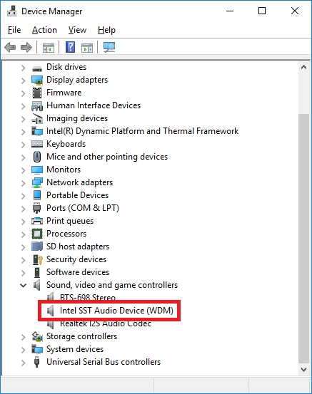
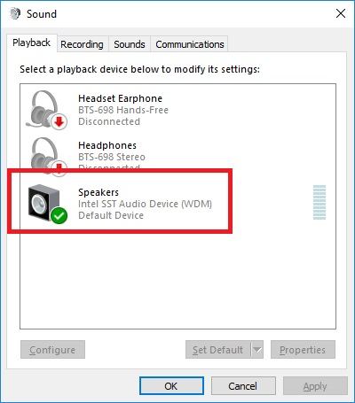
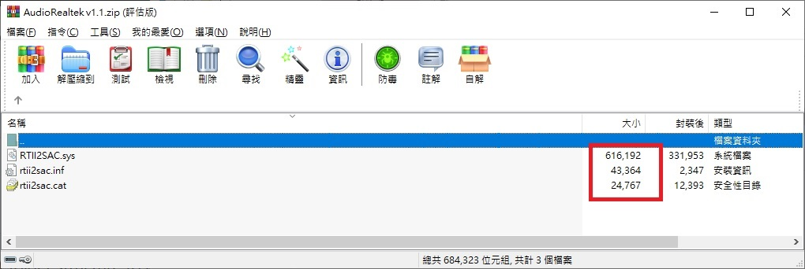
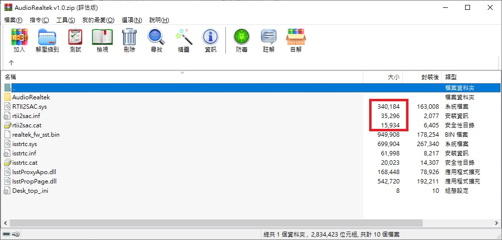
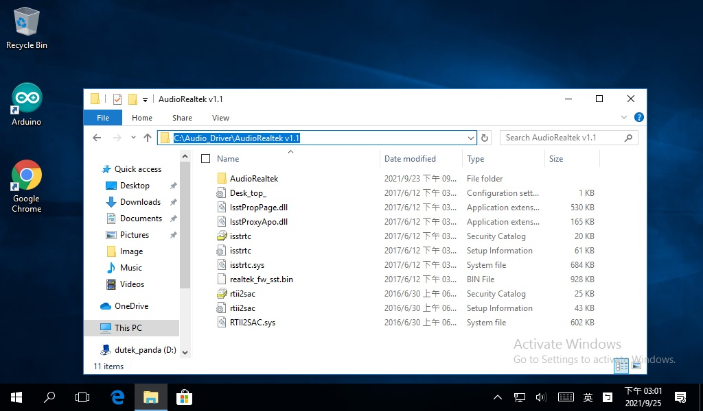
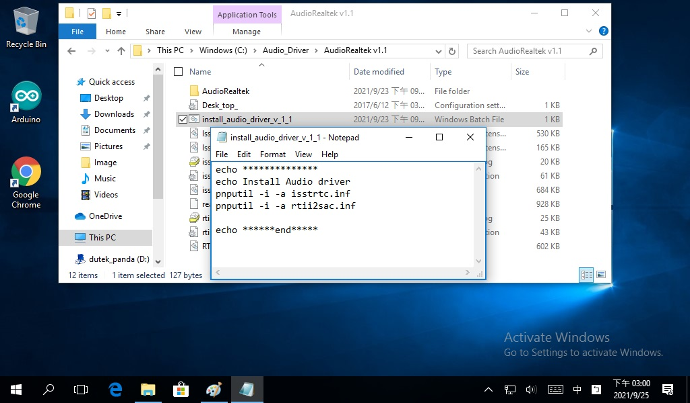
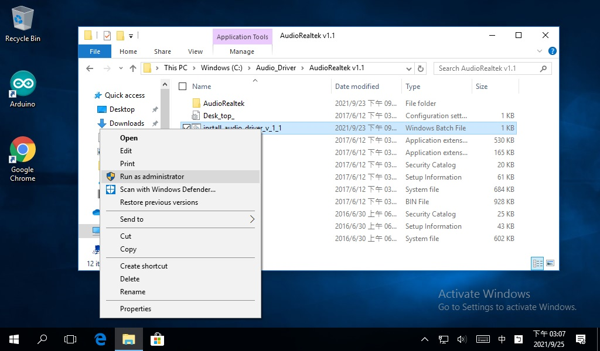

在CR200 4GB/64GB LattePanda重新安裝Win10家用版後, 修復Audio Driver
10/1 2021
類別：LattePanda
前言
LattePanda(LP)硬體規格上是個比Raspberry Pi4還要強大的SBC(單板電腦), 重點是與pi4差異最大的是, pi4使用的是ARM指令集架構, 在pi4跑Win10雖然有模擬環境可以執行x86的程式, 但還是有許多軟體無法在模擬環境上執行; 不過LattePanda不一樣, 其CPU為Intel指令集架構, 可以直接執行x86的程式, 而且其硬體也屌打Pi4(雖然LP價格也頗高的啦~), 所以直接灌Linux系統(也可以使用虛擬機但需考慮到效能會較差)也是很吸引人的。 為了要做IoT的狠腳色, 拿來裝一堆軟體、寫一堆程式、亂灌OS是很正常的, 但不論是系統搞壞了, 還是想更新其他OS, 懂得重新安裝OS就很重要了。
LattePanda產品目前主要分成下列3個系列, 每個系列又有不同的硬體規格以及是否配套產品金鑰之分, 見下圖(下文只對LattePanda系列做討論; LattePanda Alpha, LattePanda Delta系列不在討論之內)。

LattePanda系列產品在硬體上除了上表用RAM / eMMC / 產品金鑰的分類外, 其實還有早期與近期的硬體版本之分, 見下圖官方對不同硬體版本做Win10家用版的Image檔的分類。
 從圖中可以發現早期與近期的硬體version分類為
從圖中可以發現早期與近期的硬體version分類為
我想若不是清庫存, 現在基本上買到的都是最新的CR200的version了。 我購買的是CR200 4GB RAM/64GB eMMC帶授權(Win10 企業版)的LattePanda。 但其實想灌家用版的Win10也都可以, 只是該家用版的Win10沒有產品金鑰激活而已(沒激活也可以幹很多事了啦~)。
大致上了解了LP的產品線的分類後, 我們就可以查看官網提供對應硬體版本的Win10 Image檔(見上圖), 來重刷LattePanda的OS。
安裝
我想說試一下官網文件Re-install Windows 10 Home提供的image檔, 將我的LP刷成家用版來玩。 為了重灌成Win10家用版, 對應到CR200的LP, 要先下載官網提供的"x64 version for all CR200 z8350 (2GB+32GB and 4GB+64GB)image檔" , 下載下來後按照官網提示的步驟來做即可, 見下述

第1步我是直接用SD Formatter V4.0程式格式化成FAT32, 並且Label標註成WINPE。 
第2步就是解壓縮而已, 不過在解壓縮的過程當中, 我發現官網對CR200提供的"x64 version for all CR200 z8350 (2GB+32GB and 4GB+64GB)image檔", 其內容所包的資料夾見下圖

哪尼? 為啥資料夾名稱是CR110勒, 到底有沒有問題啊, 但就姑且相信它吧, 把裡面的所有內容, 都放到已經格式化成FAT32的隨身碟(我使用32GB的SD卡+讀卡機)裡, 見下圖
 其餘步驟, 照著上面去做就可以了。 它的概念就是若你插上可Bootable的外部USB碟後, LP的BIOS預設就會從可Bootable的外部USB碟那裏開機, 若沒有插入或是插入不可Bootable的外部USB碟(比如存著一般資料的隨身碟), 它就會從eMMC開機; 你可以在按開機後, 反覆按ESC鍵直到確定進入BIOS, 然後來看Boot的第一順位是否為外部USB碟啟動, 若不是請自行調整成外部USB碟啟動來開機。
其餘步驟, 照著上面去做就可以了。 它的概念就是若你插上可Bootable的外部USB碟後, LP的BIOS預設就會從可Bootable的外部USB碟那裏開機, 若沒有插入或是插入不可Bootable的外部USB碟(比如存著一般資料的隨身碟), 它就會從eMMC開機; 你可以在按開機後, 反覆按ESC鍵直到確定進入BIOS, 然後來看Boot的第一順位是否為外部USB碟啟動, 若不是請自行調整成外部USB碟啟動來開機。
從外部USB碟啟動後, LP就開始自動加載安裝程式到RAM, 然後執行該安裝程式, 將Win10安裝到eMMC, 一切都是自動的, 結束後要重啟之前, 務必將你的USB碟卸下來(卸下來不會怎樣, 因為安裝程式是在RAM執行, 但是要確保整個安裝都已經完成, 即它已經給你reboot的訊息) , 否則reboot又會再安裝一遍XD, 卸下USB碟後, 重啟LP就會開跑Win10了。 
問題
但就在一切看似美好之時, 督爛的事就發生了, 當我將喇叭或耳機的3.5mm接頭, 接上Audio Jack時, 它並沒有任何音訊輸出, 查看裝置管理員的audio driver與查看音效程式, 該驅動看似都有裝好而且正常運行(見下圖), 但就是不給你任何聲音, 然後在LattePanda論壇找遍Troubleshooting, 一樣沒找到(查找過程, 是有人問類似的問題但那些留言並沒有獲得正式解答)。


不過我一開始也沒有在預先裝好的Win10企業版先行確認我的Audio Jack是否是好的, 也就是我得要先排出是否為硬體問題, 所以我又先將LP刷回Win10企業版, 發現該Win10企業版的Audio Jack可以輸出音訊, 表示硬體是好的, 那麼就是 官網提供的Win10家用版"x64 version for all CR200 z8350 (2GB+32GB and 4GB+64GB)" image檔中, Audio Driver有問題。
解決
解決辦法就是要找到正確的Audio Driver並安裝, 好在LattePanda網站管理員有提供LATTEPANDA RESOURCES, 在這裡我們可以載到LattePanda的相關資源, 在該頁面點擊Github, 並到LattePanda-Win10-Software的4G64GB_Drivers路徑, 其中README.md教程做的是所有外設driver的更新, 但這裏我們僅需要做Audio Driver的更新。
先到LattePanda GitHub的LattePanda-Win10-Software/Drivers/4G64GB_Drivers/Audio路徑查看, 你會發現它的Audio Driver有分成v1.0與V1.1的zip檔, 把他們下載下來, 並打開來比較一下。


你可以發現v1.1提供3個更新的檔案要你直接取代掉v1.0原有的3個檔案, 不過在取代前我們來看一下All-in-One路徑的Audio Driver是哪一個版本的, 答案是v1.0版本的, 所以問題知曉了, 那就是Audio Driver裝到舊的版本了, 必須自己重新裝成v1.1的Audio Driver。
為了只單獨裝Audio Driver, 我們先到官網提供的安裝所有Driver的bat檔路徑中, 複製其中安裝Audio Driver的腳本並修改一下, 作法如下:
1. 首先在C:\下創建一個名稱為AudioDriver的資料夾, 將v1.1與v1.0的zip檔解壓縮到AudioDriver底下, 然後將v1.1的3檔案取代掉v1.0原有的3個檔案。

2. 然後再開啟記事本建立一個bat檔, 內容如下圖(此內容就是從安裝所有Driver的bat檔路徑中將Audio Driver的部分複製出來並修改而已), 最後將其檔名存成install_audio_driver_v_1_1, 存在當前driver安裝檔的目錄下。 
3. 然後再以系統管理員身分執行該bat檔, 視窗閃一下就會馬上關閉, 這沒關係, 重點是它執行了安裝腳本。 
4. Reboot LP後, 就大功告成了, Audio Jack可以work了。